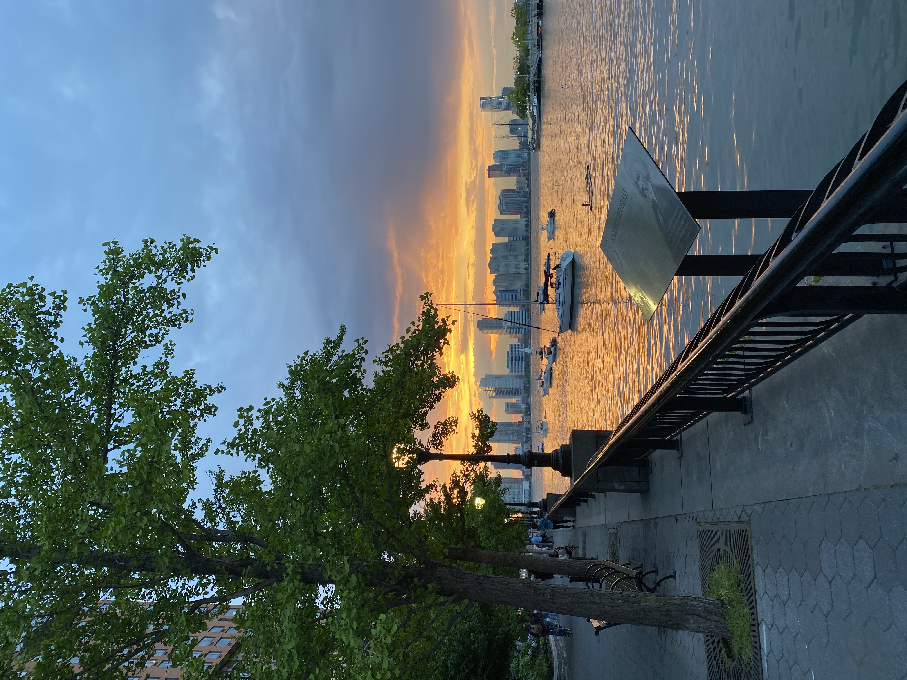
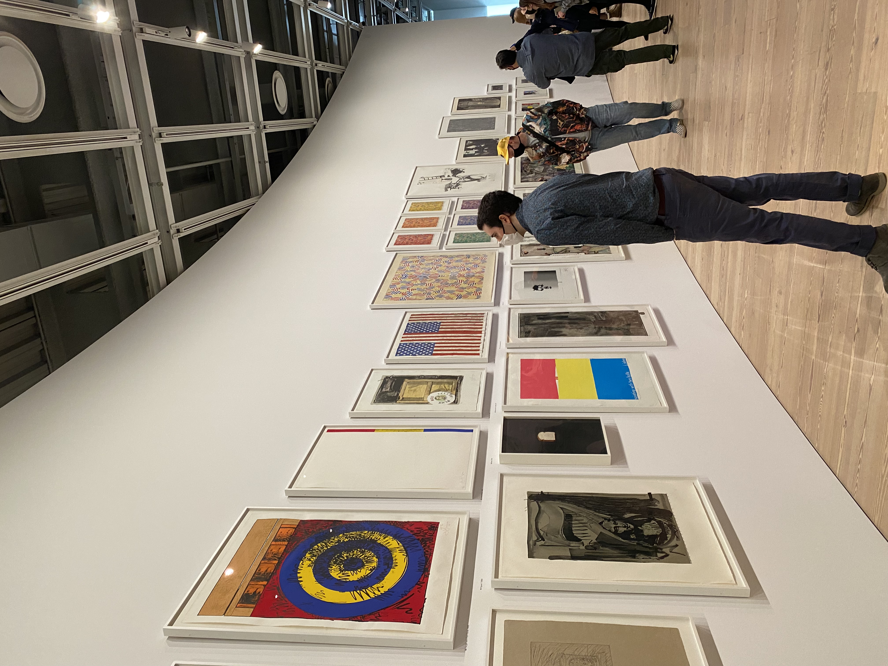

Running
I love to run! When I’m not training with my school’s cross country and track teams in Central Park, you can find me running along the Hudson River Greenway. When I run along the greenway, I get a beautiful view of the World Trade Center and Battery Park skyline. I usually run either in the early morning or the evening because I enjoy running with a view of the sunrise and sunset over the river. Rain, shine, or snow, running in NYC is always an adventure!
Art History
Although I am not an artist myself, I love to learn about and look at art! One of my favorite things to do in NYC is visit museums. My favorite exhibit this year was the Jasper Johns retrospective at the Whitney Museum in the West Village. It was cool to learn about Jasper Johns in my art history class and then see his work in person with my school’s museum club.